Этот пост перевод первого из семинаров Даниэлы Наварро. Автор рассматривает вопросы генеративного искусства с помощью кода на R. Эти навыки помогут в анализе данных и возможно позволят привнести в повседневную работу что-то новое
Даниэла Наварро - творческий художник, специалист по обработке данных, профессиональный педагог, математический психолог, академический профессор в области восстановления, разработчик R с открытым исходным кодом и иногда эссеист. В настоящее время она является адвокатом разработчиков в Voltron Data, работающим с экосистемой Apache Arrow. Вы можете найти ее работы по адресу art.djnavarro.net , и другие подробности на djnavarro.net . Даниэла живет в Сиднее, Австралия, со своими двумя детьми и подпиской на Netflix.
Структура семинара
Семинар разделен на два дня, каждый день рассматриваются по 4 темы. Я попробую пройти каждую тему анализируя метериал и по возможности добавлять что-то от себя делая акцент на корпоративных задачах.
День первый. Начало
Практическое введение в генеративное искусство. Создавайте свои собственные фрагменты, используя {ggplot2} и {dplyr}
Warning: пакет 'scales' был собран под R версии 4.2.1
В пакете ggplot2 есть встроенный набор данных mpg, он об автомобилях, но для наших целей это не важно, нам нужен просто набор данных.
mpg
# A tibble: 234 × 11
manufacturer model displ year cyl trans drv cty hwy fl class
<chr> <chr> <dbl> <int> <int> <chr> <chr> <int> <int> <chr> <chr>
1 audi a4 1.8 1999 4 auto… f 18 29 p comp…
2 audi a4 1.8 1999 4 manu… f 21 29 p comp…
3 audi a4 2 2008 4 manu… f 20 31 p comp…
4 audi a4 2 2008 4 auto… f 21 30 p comp…
5 audi a4 2.8 1999 6 auto… f 16 26 p comp…
6 audi a4 2.8 1999 6 manu… f 18 26 p comp…
7 audi a4 3.1 2008 6 auto… f 18 27 p comp…
8 audi a4 quattro 1.8 1999 4 manu… 4 18 26 p comp…
9 audi a4 quattro 1.8 1999 4 auto… 4 16 25 p comp…
10 audi a4 quattro 2 2008 4 manu… 4 20 28 p comp…
# … with 224 more rows
Не нужно думать о качестве или конситентности, это просто числа и просто случайный набор данных для нас и нашего искусства. Построим простую диаграмму рассеивания.
Когда смотришь на такой график невольно начинаешь оценивать и искать привязку к контексту, думать насколько адекватны данные и т.д. Поэтому избавимся от всех легенд и контекста на графике и сделаем размер точек не читаемым
dat|>ggplot(aes( x =x0, y =y0, xend =x1, yend =y1, colour =shade, size =size))+geom_segment(show.legend =FALSE)+# рисует прямую лини. между точками (x, y) и (xend, yend)coord_polar()+scale_y_continuous(expand =c(0, 0))+# позиции шкал для непрерывных данныхscale_x_continuous(expand =c(0, 0))+scale_color_viridis_c()+# преоразование шкал в тип viridis (которые воспринимаются единообразно как в цветном, так и в черно-белом варианте.)scale_size(range =c(0, 10))+# Задаем размер шкалы, для лучшего восприятия theme_void()
Warning: Using `size` aesthetic for lines was deprecated in ggplot2 3.4.0.
ℹ Please use `linewidth` instead.
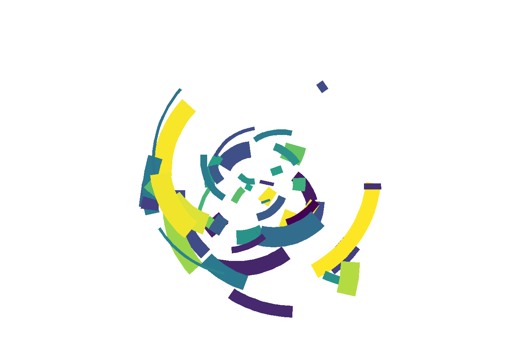
И вот получилась абстрактная фигура с претензией на искусство😀
Не то чтобы кто-то когда-либо спрашивал мое мнение на эту тему, но это то, что я считаю генеративным искусством на самом деле. Автоматизированный процесс, который принимает мусор в качестве входных данных и создает непредсказуемо восхитительные результаты – иногда с небольшим полезным человеческим надзором и кураторством – это система порождающего искусства. По сути, это процесс создания чего-то из ничего. Искусство из пустоты. Сокровище из мусора. Сигнал от шума. Вы поняли идею.
Теперь для автоматизации создания таких арт объектов обернем все в функцию. Изменение начального аргумента создает новые фрагменты, которые никаким систематическим образом не отличаются друг от друга, в то время как изменение n и палитры изменяет количество нанесенных сегментов и используемую цветовую схему.
polar_art<-function(seed, n, palette){# set the state of the random number generatorset.seed(seed)# data frame containing random values for # aesthetics we might want to use in the artdat<-tibble( x0 =runif(n), y0 =runif(n), x1 =x0+runif(n, min =-.2, max =.2), y1 =y0+runif(n, min =-.2, max =.2), shade =runif(n), size =runif(n))# plot segments in various colours, using # polar coordinates and a gradient palettedat|>ggplot(aes( x =x0, y =y0, xend =x1, yend =y1, colour =shade, size =size))+geom_segment(show.legend =FALSE)+coord_polar()+scale_y_continuous(expand =c(0, 0))+scale_x_continuous(expand =c(0, 0))+scale_colour_gradientn(colours =palette)+scale_size(range =c(0, 10))+theme_void()}
Создадим несколько объектов с разным количеством сегментов и палитрами:
polar_art(seed =1, n =500, palette =c("antiquewhite", "orange", "bisque"))
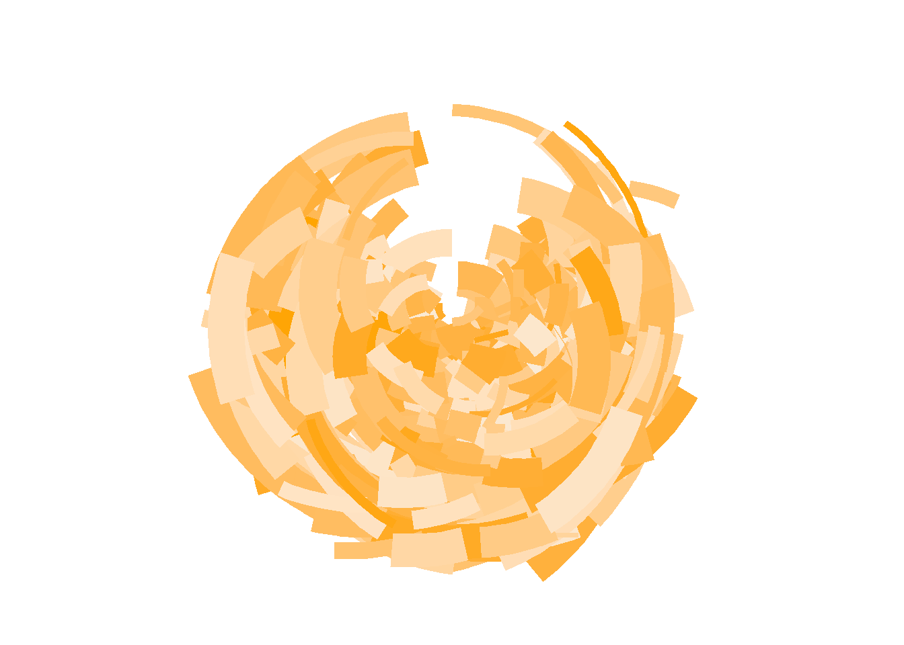
polar_art(seed =1, n =500, palette =c("red", "black", "white"))
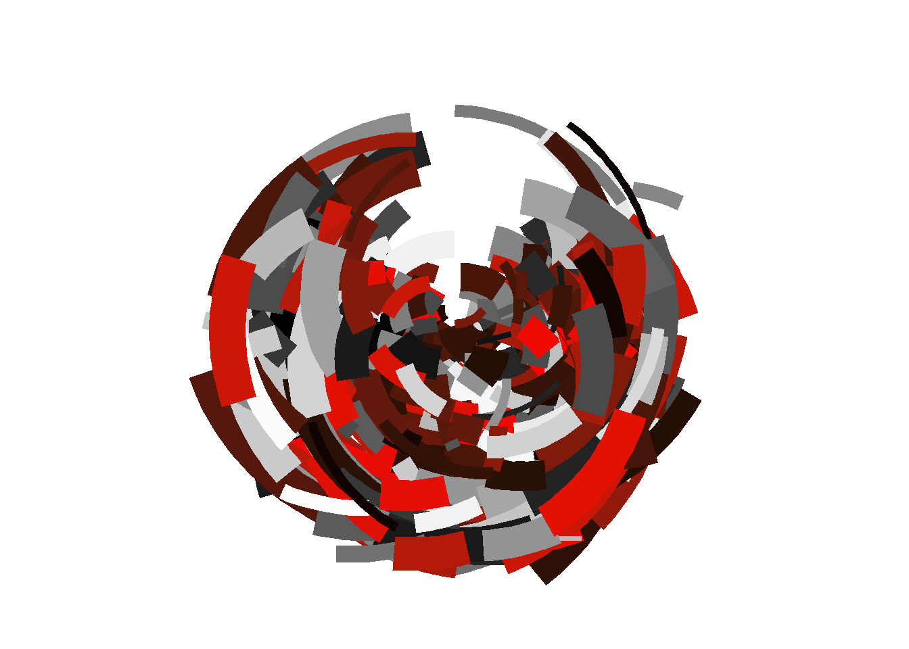
polar_art(seed =2, n =50, palette =c("red", "black", "white"))
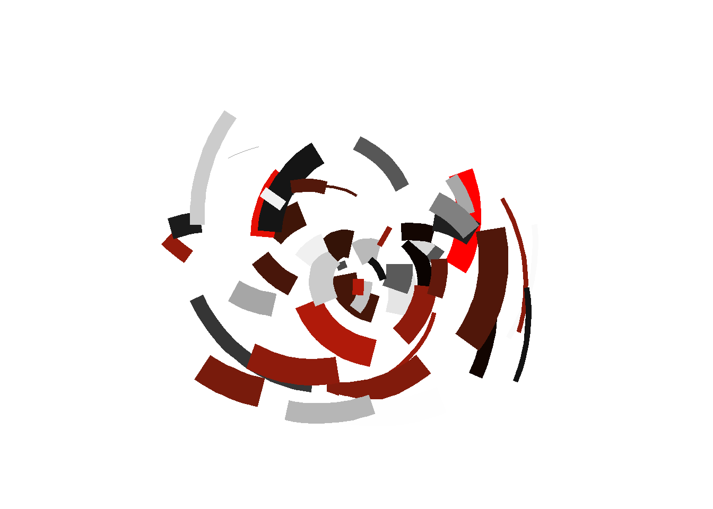
Цвета
Зададим набор цветов и визуализируем его через функцию show_col() из пакета scales - это хороший способ быстрого предварительного просмотра цветов:
Хотя в этой палитре всего пять цветов, функция polar_art() использует scales_colour_gradientn() для построения непрерывной цветовой шкалы из них путем линейной интерполяции между ними. Вы можете сделать то же самое вручную, используя colorRampPalette(). В приведенном ниже коде создана новая функция palette_fn(), которая сгенерирует вектор цветов, который линейно интерполирует между пятью входными цветами в pal:
image( x =matrix(1:100, ncol =1), col =palette_fn(100), useRaster =TRUE, axes =FALSE)
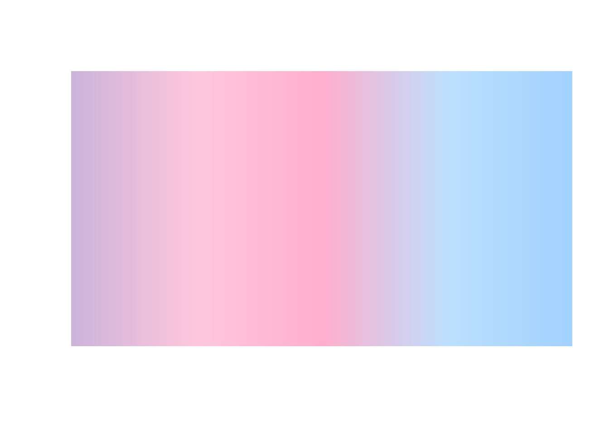
В примере выше был взят один набор цветов из Интернета, чтобы определить палитру, но есть много встроенных палитр, которые можно выбрать случайным образом в рамках процесса генерации. Например, пакет ggthemes содержит список под названием canva_palettes, который содержит 150 палитр, взятых из canva.com . Например, вот одна из этих палитр
Учитывая тот факт, что у нас есть список, содержащий 150 различных палитр, очень просто написать функцию sample_canva(), которая случайным образом выбирает одну из этих палитр:
Теперь в функцию генерации объекта в аргумент палитры будем отправлять случайную палитру.
polar_art(seed =2, n =100, palette =sample_canva(seed =2))
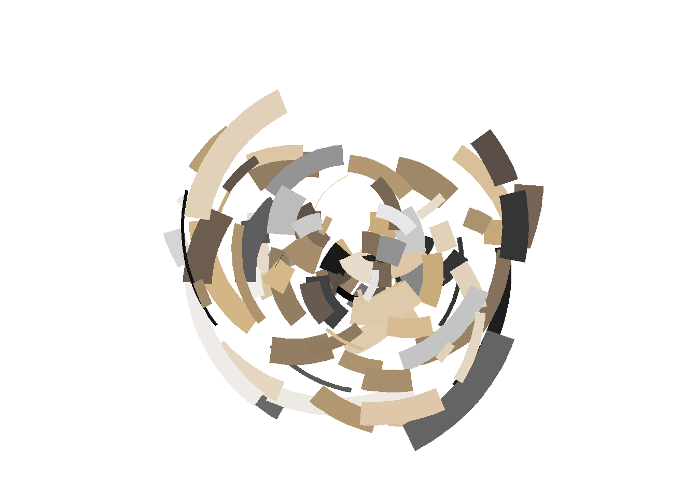
polar_art(seed =2, n =100, palette =sample_canva(seed =3))
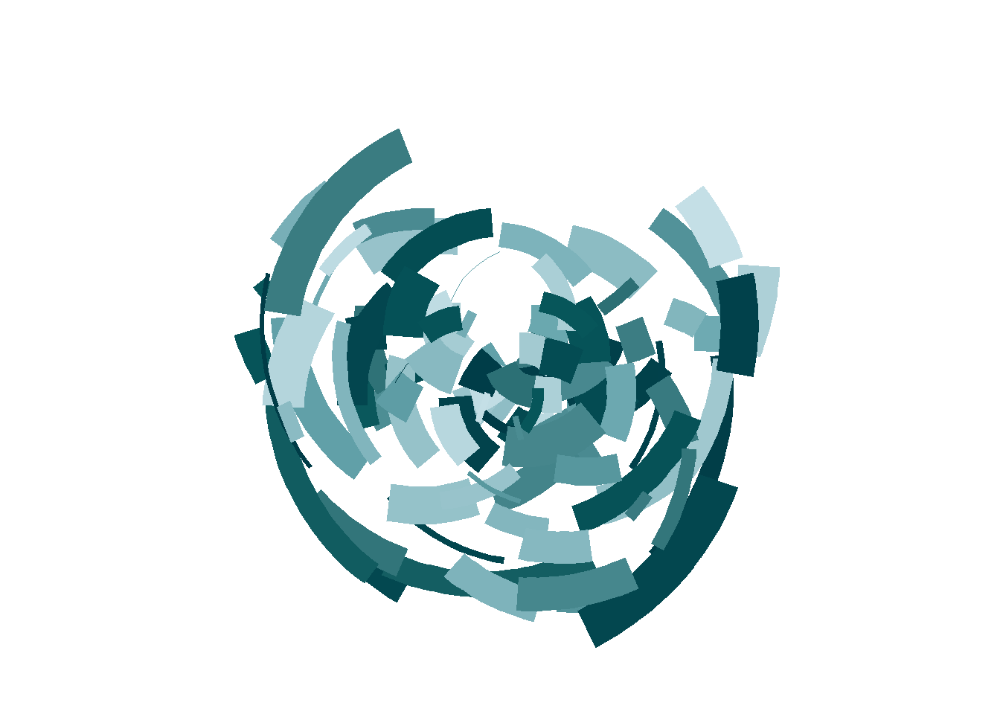
polar_art(seed =2, n =100, palette =sample_canva(seed =4))
Обратите внимание, что я настроила функцию таким образом, чтобы иметь возможность контролировать, какие элементы объекта изменять. Во всех трех изображениях я использовала одно и то же начальное значение при вызове polar_art(), поэтому случайная конфигурация объектов идентична во всех трех случаях. В предыдущем примере, я дала разные начальные значения функции sample_canva(), поэтому изображения имеют разные палитры. Возможен также обратный вариант, позволяющий создавать различные конфигурации в одной и той же цветовой гамме:
polar_art(seed =5, n =100, palette =sample_canva(seed =1))
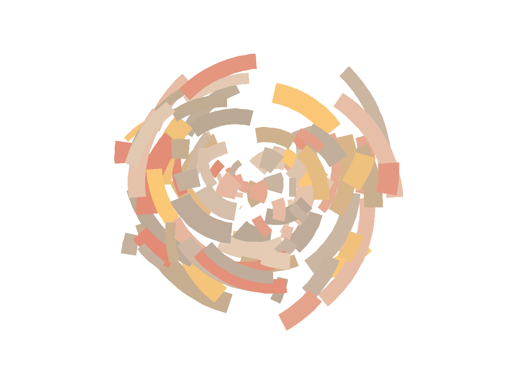
polar_art(seed =6, n =100, palette =sample_canva(seed =1))
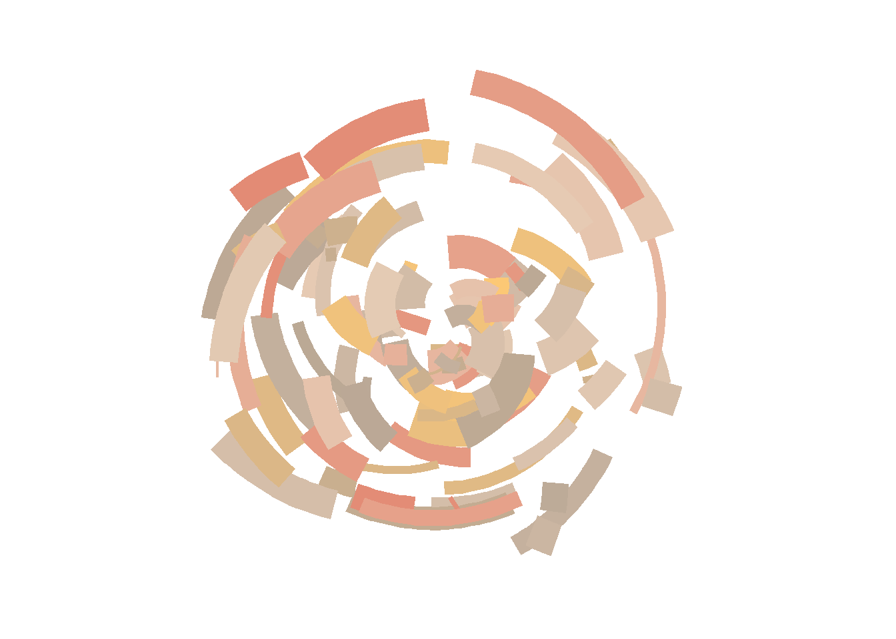
polar_art(seed =7, n =100, palette =sample_canva(seed =1))
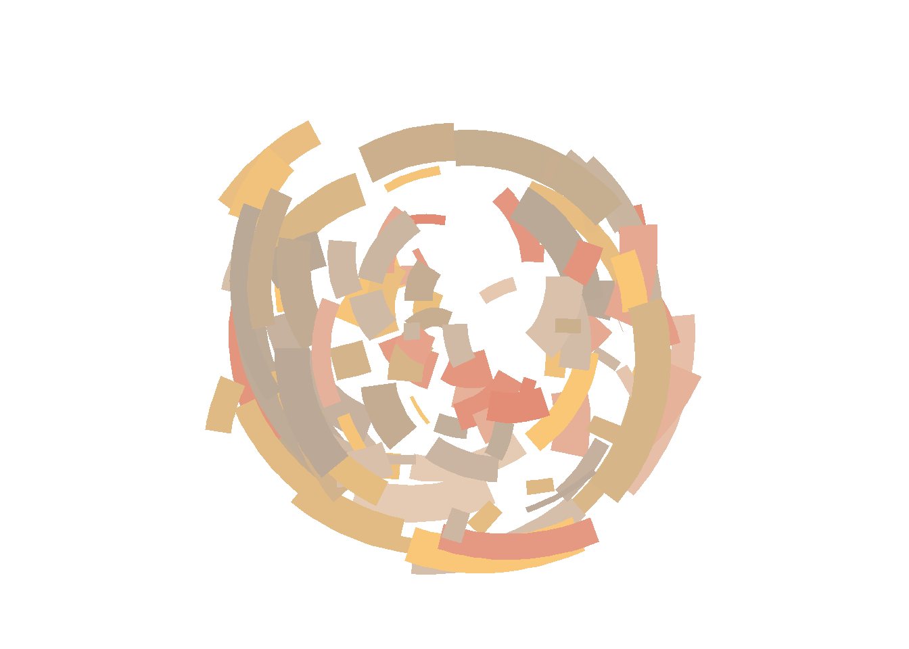
Возможность выбирать, когда включается и выключается случайность, очень удобна!
Компазиция
Функция polar_art() хороша, но она не очень гибкая. Она позволяет немного контролировать палитру и количество сегментов, которые будут нанесены на график, но это все. Это не позволяет использовать всю гибкость ggplot2 для создания иллюстраций.
Например, что, если я захочу создать больше фигур в “похожем” стиле на те, что созданы ранее, но нарисовать разные геометрические фигуры? Или, возможно, отобразить более одного набора данных как часть одного фрагмента? Функция polar_art() этого не допускает. Генерация данных и построение графика - все это обрабатывается внутри функции. Возможно, есть основания полагать, что следует разбить polar_art() на более мелкие функции и посмотреть, поможет ли это.
Давайте начнем с написания функции “генератор случайных чисел”, sample_data(). Эта функция будет генерировать пустые строки, полные случайных чисел:
sample_data<-function(seed=NULL, n=100){if(!is.null(seed))set.seed(seed)dat<-tibble( x0 =runif(n), y0 =runif(n), x1 =x0+runif(n, min =-.2, max =.2), y1 =y0+runif(n, min =-.2, max =.2), shade =runif(n), size =runif(n), shape =factor(sample(0:22, size =n, replace =TRUE)))}
Далее создадим функцию styled_plot(), которая принимает палитру и (необязательно) набор данных в качестве входных данных и настраивает сопоставления и стилистические аспекты графика. Эта функция выполняет большую часть работы по определению того, какие художественные работы возможны с использованием этой системы, даже если на самом деле она ничего не рисует. Например, она указывает coord_polar() в качестве системы координат, поэтому любые создаваемые точки или линии будут показаны в полярных координатах. Она использует guide_none() для подавления условных обозначений и theme_void() для скрытия осей, заголовков осей и так далее.
Эта структура обеспечивает четкое распределение ответственности между различными функциями. Функция sample_canva() выполняет работу по генерации случайных палитр, sample_data() выполняет работу по созданию случайных данных для построения графика, polar_styled_plot() заботится обо всех настройках ggplot, а затем вы можете выбрать, какую геометрию вы хотите добавить. Таким образом, мы можем написать подобный код, который отличается только выбором geom:
Поскольку выходные данные polar_styled_plot() - это ggplot, к которому мы можем добавлять слои, и поскольку каждый слой в ggplot может предоставлять свои собственные данные, теперь у нас есть возможность повторно использовать эти компоненты различными способами. Для этого полезно загрузить пакет dplyr. Вот пример, в котором мы генерируем два случайных набора данных и передаем их в четыре отдельных геома, объединенных в один объект:
dat1<-sample_data(n =2000, seed =123)dat2<-sample_data(n =100, seed =456)|>mutate(y0 =.3+y0*.6, y1 =.3)polar_styled_plot(palette =sample_canva(seed =7))+geom_segment( data =dat1|>mutate(size =size*3))+geom_segment( data =dat2|>mutate(size =size/5), lineend ="round", colour ="white")+geom_segment( data =dat2|>mutate(size =size/40), lineend ="round", colour ="#222222")+geom_point( data =dat2|>mutate(size =size*2), colour ="#222222")
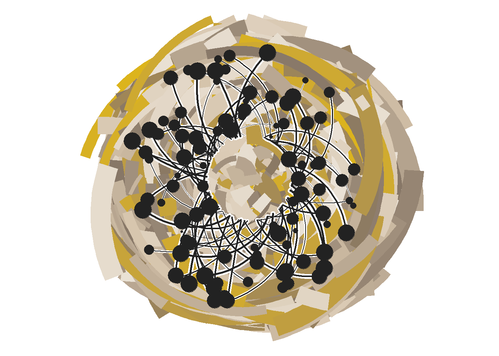
Другой пример, когда три копии одного и того же набора случайных данных создают вариацию, обладающую дополнительными симметриями:
Подводя итог первой части из серии статей для себя выделил такие моменты:
Генерация искусства хороший способ попрактиковаться в написании кода и глубже изучить пакеты визуализации. Не нужно думать о постановке задачи, данных и читабельности результата.
Красиво или нет, искусство или нет не понятно, в любом случае это интересно
Что можно применить в работе:
тонкая настройка осей и данных на графике
просмотр палитры и их выбор
сочетание слоев на графике
Поражает многообразие настроек графиков, их настолько много, что даже при тестировании сложно их все перебрать.
Citation
BibTeX citation:
@online{practicesit2022,
author = {Best Practices IT},
title = {Art from Code. {День} 1 - {Начало}},
date = {2022-10-11},
langid = {en}
}
For attribution, please cite this work as:
Best Practices IT. 2022. “Art from Code. День 1 - Начало.”
October 11, 2022.